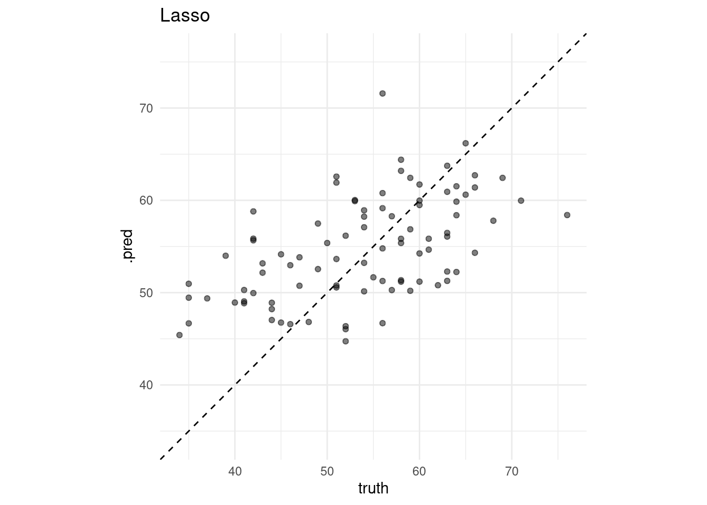
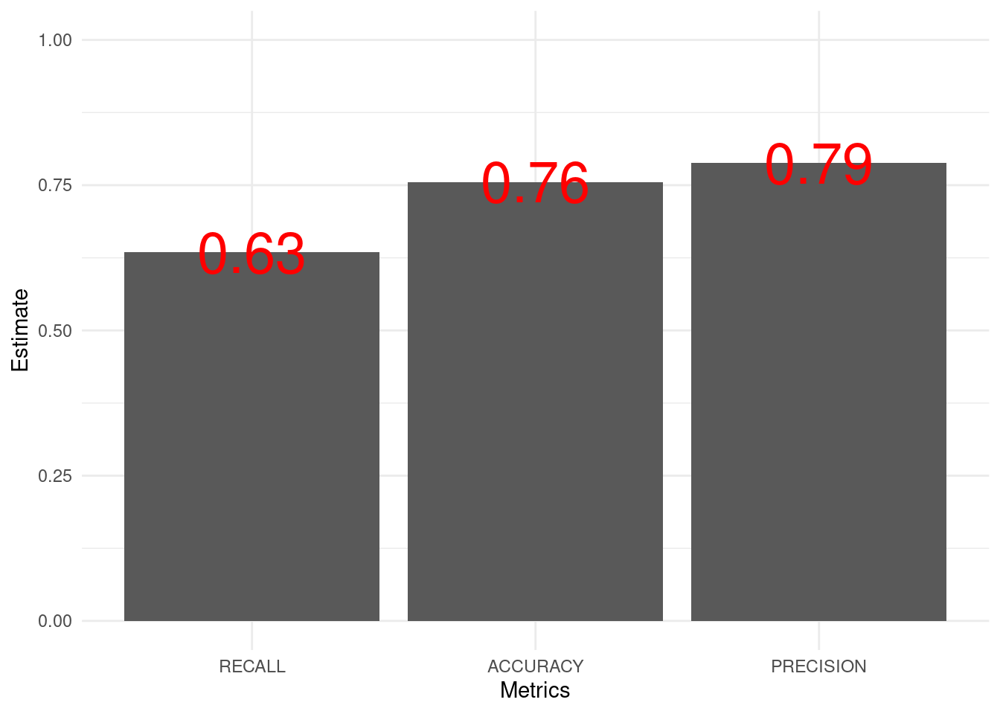
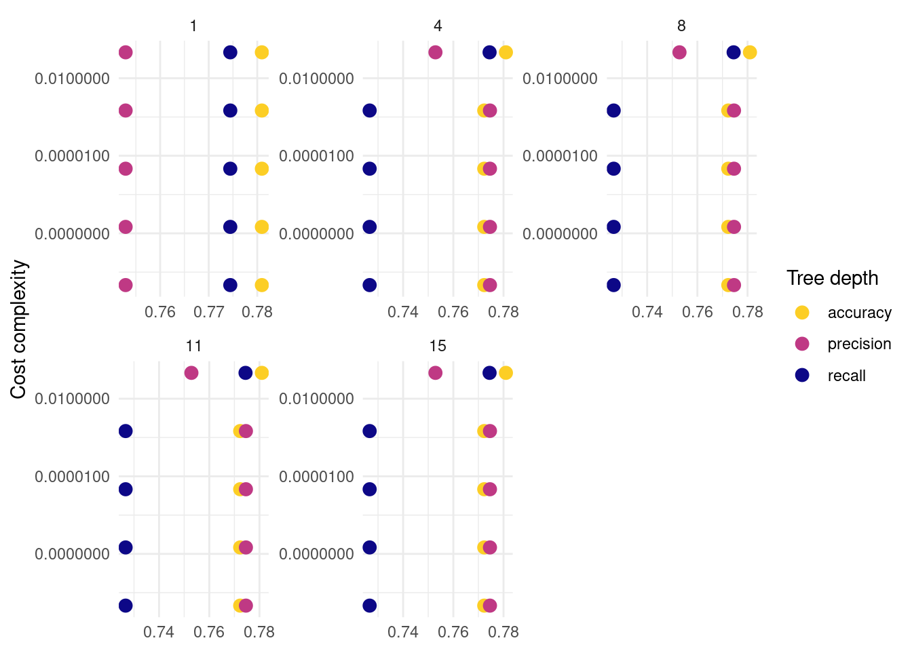
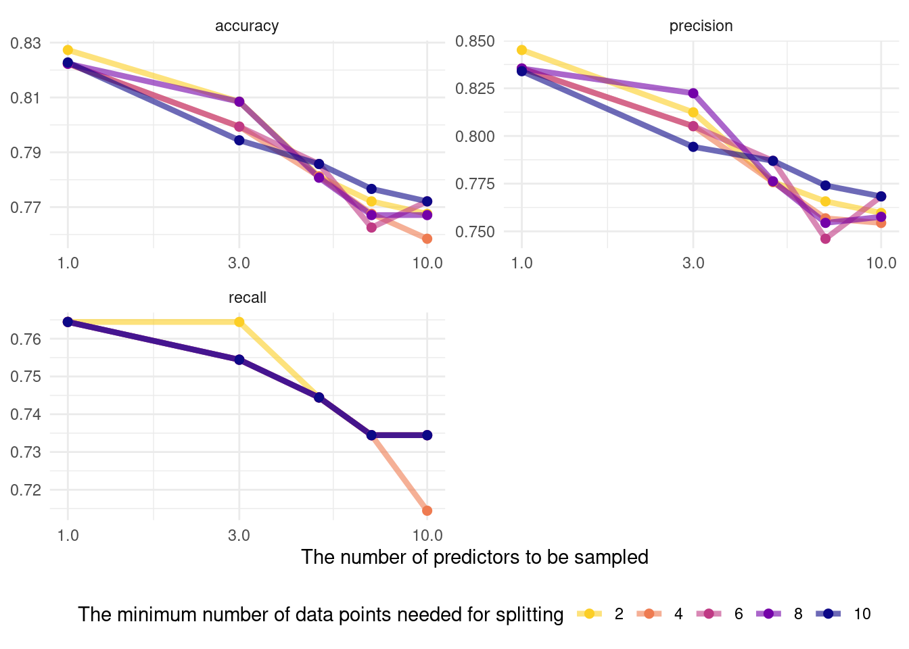
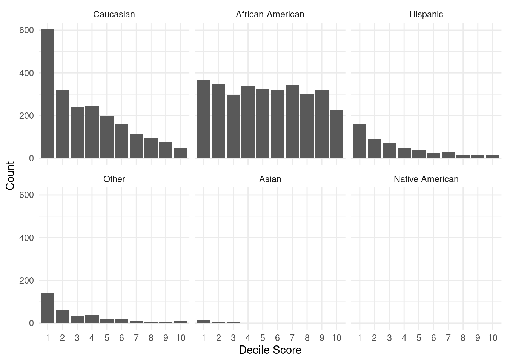

Chapter 7 High-dimensional data
7.1 Overview
The rise of high-dimensional data. The new data frontiers in social sciences—text (Gentzkow et al. 2019; Grimmer and Stewart 2013) and and image (Joo and Steinert-Threlkeld 2018)—are all high-dimensional data.
1000 common English words for 30-word tweets: \(1000^{30}\) similar to N of atoms in the universe (Gentzkow et al. 2019)
Belloni, Alexandre, Victor Chernozhukov, and Christian Hansen. “High-dimensional methods and inference on structural and treatment effects.” Journal of Economic Perspectives 28, no. 2 (2014): 29-50.
The rise of new approach: statistics + computer science = machine learning
Statistical inference
\(y\) <- some probability models (e.g., linear regression, logistic regression) <- \(x\)
\(y\) = \(X\beta\) + \(\epsilon\)
The goal is to estimate \(\beta\)
Machine learning
\(y\) <- unknown <- \(x\)
\(y\) <-> decision trees, neutral nets <-> \(x\)
For the main idea behind prediction modeling, see Breiman, Leo (Berkeley stat faculty who passed away in 2005). “Statistical modeling: The two cultures (with comments and a rejoinder by the author).” Statistical science 16, no. 3 (2001): 199-231.
“The problem is to find an algorithm \(f(x)\) such that for future \(x\) in a test set, \(f(x)\) will be a good predictor of \(y\).”
“There are two cultures in the use of statistical modeling to reach conclusions from data. One assumes that the data are generated by a given stochastic data model. The other uses algorithmic models and treats the data mechanism as unknown.”
Algorithmic models, both in theory and practice, has developed rapidly in fields of outside statistics. It can be used on large complex data sets and as a more accurate and informative alternative to data modeling on smaller data sets. - Leo Breiman
How ML differs from econometrics?
A review by Athey, Susan, and Guido W. Imbens. “Machine learning methods that economists should know about.” Annual Review of Economics 11 (2019): 685-725.
Stat:
Specifying a target (i.e., an estimand)
Fitting a model to data using an objective function (e.g., the sum of squared errors)
Reporting point estimates (effect size) and standard errors (uncertainty)
Validation by yes-no using goodness-of-fit tests and residual examination
ML:
Developing algorithms (estimating f(x))
Prediction power not structural/causal parameters
Basically, high-dimensional data statistics (N < P)
The major problem is to avoid “the curse of dimensionality” (too many features - > overfitting)
Validation: out-of-sample comparisons (cross-validation) not in-sample goodness-of-fit measures
So, it’s curve-fitting but the primary focus is unseen (test data) not seen data (training data)
A quick review on ML lingos for those trained in econometrics
Sample to estimate parameters = Training sample
Estimating the model = Being trained
Regressors, covariates, or predictors = Features
Regression parameters = weights
Prediction problems = Supervised (some \(y\) are known) + Unsupervised (\(y\) unknown)

How to teach machines. Based on vas3k blog. Many images in this chapter come from vas3k blog.

The main types of machine learning. Based on vas3k blog

The map of the machine learning universe. Based on vas3k blog

Classical machine learning. Based on vas3k blog
7.2 Dataset
One of the popular datasets used in machine learning competitions
# Load packages
## CRAN packages
pacman::p_load(here,
tidyverse,
tidymodels,
doParallel, # parallel processing
patchwork, # arranging ggplots
ck37r,
SuperLearner,
vip,
tidymodels)
## Jae's custom functions
source(here("functions", "ml_utils.r"))
# Import the dataset
data_original <- read_csv(here("data", "heart.csv"))##
## ── Column specification ────────────────────────────────────────────────────────
## cols(
## age = col_double(),
## sex = col_double(),
## cp = col_double(),
## trestbps = col_double(),
## chol = col_double(),
## fbs = col_double(),
## restecg = col_double(),
## thalach = col_double(),
## exang = col_double(),
## oldpeak = col_double(),
## slope = col_double(),
## ca = col_double(),
## thal = col_double(),
## target = col_double()
## )## Rows: 303
## Columns: 14
## $ age <dbl> 63, 37, 41, 56, 57, 57, 56, 44, 52, 57, 54, 48, 49, 64, 58, …
## $ sex <dbl> 1, 1, 0, 1, 0, 1, 0, 1, 1, 1, 1, 0, 1, 1, 0, 0, 0, 0, 1, 0, …
## $ cp <dbl> 3, 2, 1, 1, 0, 0, 1, 1, 2, 2, 0, 2, 1, 3, 3, 2, 2, 3, 0, 3, …
## $ trestbps <dbl> 145, 130, 130, 120, 120, 140, 140, 120, 172, 150, 140, 130, …
## $ chol <dbl> 233, 250, 204, 236, 354, 192, 294, 263, 199, 168, 239, 275, …
## $ fbs <dbl> 1, 0, 0, 0, 0, 0, 0, 0, 1, 0, 0, 0, 0, 0, 1, 0, 0, 0, 0, 0, …
## $ restecg <dbl> 0, 1, 0, 1, 1, 1, 0, 1, 1, 1, 1, 1, 1, 0, 0, 1, 1, 1, 1, 1, …
## $ thalach <dbl> 150, 187, 172, 178, 163, 148, 153, 173, 162, 174, 160, 139, …
## $ exang <dbl> 0, 0, 0, 0, 1, 0, 0, 0, 0, 0, 0, 0, 0, 1, 0, 0, 0, 0, 0, 0, …
## $ oldpeak <dbl> 2.3, 3.5, 1.4, 0.8, 0.6, 0.4, 1.3, 0.0, 0.5, 1.6, 1.2, 0.2, …
## $ slope <dbl> 0, 0, 2, 2, 2, 1, 1, 2, 2, 2, 2, 2, 2, 1, 2, 1, 2, 0, 2, 2, …
## $ ca <dbl> 0, 0, 0, 0, 0, 0, 0, 0, 0, 0, 0, 0, 0, 0, 0, 0, 0, 0, 0, 2, …
## $ thal <dbl> 1, 2, 2, 2, 2, 1, 2, 3, 3, 2, 2, 2, 2, 2, 2, 2, 2, 2, 2, 2, …
## $ target <dbl> 1, 1, 1, 1, 1, 1, 1, 1, 1, 1, 1, 1, 1, 1, 1, 1, 1, 1, 1, 1, …- For more information on the Iowa housing data, read Cook (2011). This is one of the famous datastets used in many prediction modeling competitions.
7.3 Workflow
- Preprocessing
- Model building
- Model fitting
- Model evaluation
- Model tuning
- Prediction
7.4 tidymodels
Like
tidyverse,tidymodelsis a collection of packages.Why taking a tidyverse approach to machine learning?
Benefits
Readable code
Reusable data structures
Extendable code

Tidymodels. From RStudio.
tidymodels are an integrated, modular, extensible set of packages that implement a framework that facilitates creating predicative stochastic models. - Joseph Rickert@RStudio
Currently, 238 models are available
The following materials are based on the machine learning with tidymodels workshop I developed for D-Lab. The original workshop was designed by Chris Kennedy and [Evan Muzzall](https://dlab.berkeley.edu/people/evan-muzzall.
7.5 Pre-processing
recipes: for pre-processingtextrecipesfor text pre-processingStep 1:
recipe()defines target and predictor variables (ingredients).Step 2:
step_*()defines preprocessing steps to be taken (recipe).The list of the preprocessing steps draws on the vignette of the
parsnippackage.dummy: Also called one-hot encoding
zero variance: Removing columns (or features) with a single unique value
impute: Imputing missing values
decorrelate: Mitigating correlated predictors (e.g., principal component analysis)
normalize: Centering and/or scaling predictors (e.g., log scaling). Scaling matters because many algorithms (e.g., lasso) are scale-variant (except tree-based algorithms). Remind you that normalization (sensitive to outliers) = \(\frac{X - X_{min}}{X_{max} - X_{min}}\) and standardization (not sensitive to outliers) = \(\frac{X - \mu}{\sigma}\)
transform: Making predictors symmetric
Step 3:
prep()prepares a dataset to base each step on.Step 4:
bake()applies the pre-processing steps to your datasets.
In this course, we focus on two preprocessing tasks.
- One-hot encoding (creating dummy/indicator variables)
# Turn selected numeric variables into factor variables
data <- data %>%
dplyr::mutate(across(c("sex", "ca", "cp", "slope", "thal"), as.factor))
glimpse(data) ## Rows: 303
## Columns: 14
## $ age <dbl> 63, 37, 41, 56, 57, 57, 56, 44, 52, 57, 54, 48, 49, 64, 58, …
## $ sex <fct> 1, 1, 0, 1, 0, 1, 0, 1, 1, 1, 1, 0, 1, 1, 0, 0, 0, 0, 1, 0, …
## $ cp <fct> 3, 2, 1, 1, 0, 0, 1, 1, 2, 2, 0, 2, 1, 3, 3, 2, 2, 3, 0, 3, …
## $ trestbps <dbl> 145, 130, 130, 120, 120, 140, 140, 120, 172, 150, 140, 130, …
## $ chol <dbl> 233, 250, 204, 236, 354, 192, 294, 263, 199, 168, 239, 275, …
## $ fbs <dbl> 1, 0, 0, 0, 0, 0, 0, 0, 1, 0, 0, 0, 0, 0, 1, 0, 0, 0, 0, 0, …
## $ restecg <dbl> 0, 1, 0, 1, 1, 1, 0, 1, 1, 1, 1, 1, 1, 0, 0, 1, 1, 1, 1, 1, …
## $ thalach <dbl> 150, 187, 172, 178, 163, 148, 153, 173, 162, 174, 160, 139, …
## $ exang <dbl> 0, 0, 0, 0, 1, 0, 0, 0, 0, 0, 0, 0, 0, 1, 0, 0, 0, 0, 0, 0, …
## $ oldpeak <dbl> 2.3, 3.5, 1.4, 0.8, 0.6, 0.4, 1.3, 0.0, 0.5, 1.6, 1.2, 0.2, …
## $ slope <fct> 0, 0, 2, 2, 2, 1, 1, 2, 2, 2, 2, 2, 2, 1, 2, 1, 2, 0, 2, 2, …
## $ ca <fct> 0, 0, 0, 0, 0, 0, 0, 0, 0, 0, 0, 0, 0, 0, 0, 0, 0, 0, 0, 2, …
## $ thal <fct> 1, 2, 2, 2, 2, 1, 2, 3, 3, 2, 2, 2, 2, 2, 2, 2, 2, 2, 2, 2, …
## $ target <dbl> 1, 1, 1, 1, 1, 1, 1, 1, 1, 1, 1, 1, 1, 1, 1, 1, 1, 1, 1, 1, …- Imputation
## # A tibble: 1 x 14
## age sex cp trestbps chol fbs restecg thalach exang oldpeak slope
## <int> <int> <int> <int> <int> <int> <int> <int> <int> <int> <int>
## 1 0 0 0 0 0 0 0 0 0 0 0
## # … with 3 more variables: ca <int>, thal <int>, target <int># Add missing values
data$oldpeak[sample(seq(data), size = 10)] <- NA
# Check missing values
# Check the number of missing values
data %>%
map_df(~is.na(.) %>% sum())## # A tibble: 1 x 14
## age sex cp trestbps chol fbs restecg thalach exang oldpeak slope
## <int> <int> <int> <int> <int> <int> <int> <int> <int> <int> <int>
## 1 0 0 0 0 0 0 0 0 0 10 0
## # … with 3 more variables: ca <int>, thal <int>, target <int>## # A tibble: 1 x 14
## age sex cp trestbps chol fbs restecg thalach exang oldpeak slope
## <dbl> <dbl> <dbl> <dbl> <dbl> <dbl> <dbl> <dbl> <dbl> <dbl> <dbl>
## 1 0 0 0 0 0 0 0 0 0 0.0330 0
## # … with 3 more variables: ca <dbl>, thal <dbl>, target <dbl>7.5.1 Regression setup
7.5.1.2 Data splitting using random sampling
7.5.1.3 recipe
# Regression recipe
rec_reg <- raw_train_x_reg %>%
# Define the outcome variable
recipe(age ~ .) %>%
# Median impute oldpeak column
step_medianimpute(oldpeak) %>%
# Expand "sex", "ca", "cp", "slope", and "thal" features out into dummy variables (indicators).
step_dummy(c("sex", "ca", "cp", "slope", "thal"))
# Prepare a dataset to base each step on
prep_reg <- rec_reg %>% prep(retain = TRUE) # x features
train_x_reg <- juice(prep_reg, all_predictors())
test_x_reg <- bake(object = prep_reg,
new_data = raw_test_x_reg, all_predictors())
# y variables
train_y_reg <- juice(prep_reg, all_outcomes())$age %>% as.numeric()
test_y_reg <- bake(prep_reg, raw_test_x_reg, all_outcomes())$age %>% as.numeric()
# Checks
names(train_x_reg) # Make sure there's no age variable!## [1] "trestbps" "chol" "fbs" "restecg" "thalach" "exang"
## [7] "oldpeak" "target" "sex_X1" "ca_X1" "ca_X2" "ca_X3"
## [13] "ca_X4" "cp_X1" "cp_X2" "cp_X3" "slope_X1" "slope_X2"
## [19] "thal_X1" "thal_X2" "thal_X3"## [1] "numeric"- Note that other imputation methods are also available.
## [1] "step_bagimpute" "step_impute_linear"
## [3] "step_knnimpute" "step_lowerimpute"
## [5] "step_meanimpute" "step_medianimpute"
## [7] "step_modeimpute" "step_rollimpute"
## [9] "tunable.step_bagimpute" "tunable.step_knnimpute"
## [11] "tunable.step_meanimpute" "tunable.step_rollimpute"- You can also create your own
step_functions. For more information, see tidymodels.org.
7.5.2 Classification setup
7.5.2.1 Outcome variable
## [1] "numeric"## [1] "factor"7.5.2.2 Data splitting using stratified random sampling
7.5.2.3 recipe
# Classification recipe
rec_class <- raw_train_x_class %>%
# Define the outcome variable
recipe(target ~ .) %>%
# Median impute oldpeak column
step_medianimpute(oldpeak) %>%
# Expand "sex", "ca", "cp", "slope", and "thal" features out into dummy variables (indicators).
step_normalize(age) %>%
step_dummy(c("sex", "ca", "cp", "slope", "thal"))
# Prepare a dataset to base each step on
prep_class <- rec_class %>%prep(retain = TRUE) # x features
train_x_class <- juice(prep_class, all_predictors())
test_x_class <- bake(prep_class, raw_test_x_class, all_predictors())
# y variables
train_y_class <- juice(prep_class, all_outcomes())$target %>% as.factor()
test_y_class <- bake(prep_class, raw_test_x_class, all_outcomes())$target %>% as.factor()
# Checks
names(train_x_class) # Make sure there's no target variable!## [1] "age" "trestbps" "chol" "fbs" "restecg" "thalach"
## [7] "exang" "oldpeak" "sex_X1" "ca_X1" "ca_X2" "ca_X3"
## [13] "ca_X4" "cp_X1" "cp_X2" "cp_X3" "slope_X1" "slope_X2"
## [19] "thal_X1" "thal_X2" "thal_X3"## [1] "factor"7.6 Supervised learning
x -> f - > y (defined)
7.6.1 OLS and Lasso
7.6.1.1 parsnip
- Build models (
parsnip)
- Specify a model
- Specify an engine
- Specify a mode
# OLS spec
ols_spec <- linear_reg() %>% # Specify a model
set_engine("lm") %>% # Specify an engine: lm, glmnet, stan, keras, spark
set_mode("regression") # Declare a mode: regression or classification
# Lasso spec
lasso_spec <- linear_reg(penalty = 0.1, # tuning hyperparameter
mixture = 1) %>% # 1 = lasso, 0 = ridge
set_engine("glmnet") %>%
set_mode("regression")
# If you don't understand parsnip arguments
lasso_spec %>% translate() # See the documentation## Linear Regression Model Specification (regression)
##
## Main Arguments:
## penalty = 0.1
## mixture = 1
##
## Computational engine: glmnet
##
## Model fit template:
## glmnet::glmnet(x = missing_arg(), y = missing_arg(), weights = missing_arg(),
## alpha = 1, family = "gaussian")- Fit models
7.6.1.2 yardstick
- Visualize model fits
## [[1]]##
## [[2]]
# Define performance metrics
metrics <- yardstick::metric_set(rmse, mae, rsq)
# Evaluate many models
evals <- purrr::map(list(ols_fit, lasso_fit), evaluate_reg) %>%
reduce(bind_rows) %>%
mutate(type = rep(c("OLS", "Lasso"), each = 3))
# Visualize the test results
evals %>%
ggplot(aes(x = fct_reorder(type, .estimate), y = .estimate)) +
geom_point() +
labs(x = "Model",
y = "Estimate") +
facet_wrap(~glue("{toupper(.metric)}"), scales = "free_y")  - For more information, read Tidy Modeling with R by Max Kuhn and Julia Silge.
- For more information, read Tidy Modeling with R by Max Kuhn and Julia Silge.
7.6.1.3 tune
Hyperparameters are parameters which control the learning process.
7.6.1.3.1 tune ingredients
# tune() = placeholder
tune_spec <- linear_reg(penalty = tune(), # tuning hyperparameter
mixture = 1) %>% # 1 = lasso, 0 = ridge
set_engine("glmnet") %>%
set_mode("regression")
tune_spec## Linear Regression Model Specification (regression)
##
## Main Arguments:
## penalty = tune()
## mixture = 1
##
## Computational engine: glmnet7.6.1.3.2 Add these elements to a workflow
7.6.1.3.3 Visualize
# Visualize
rec_res %>%
collect_metrics() %>%
ggplot(aes(penalty, mean, col = .metric)) +
geom_errorbar(aes(
ymin = mean - std_err,
ymax = mean + std_err
),
alpha = 0.3
) +
geom_line(size = 2) +
scale_x_log10() +
labs(x = "log(lambda)") +
facet_wrap(~glue("{toupper(.metric)}"),
scales = "free",
nrow = 2) +
theme(legend.position = "none")7.6.1.3.4 Select
top_rmse <- show_best(rec_res, metric = "rmse")
best_rmse <- select_best(rec_res, metric = "rmse")
best_rmse ## # A tibble: 1 x 2
## penalty .config
## <dbl> <chr>
## 1 0.153 Model46glue('The RMSE of the intiail model is
{evals %>%
filter(type == "Lasso", .metric == "rmse") %>%
select(.estimate) %>%
round(2)}')## The RMSE of the intiail model is
## 7.88glue('The RMSE of the tuned model is {rec_res %>%
collect_metrics() %>%
filter(.metric == "rmse") %>%
arrange(mean) %>%
dplyr::slice(1) %>%
select(mean) %>%
round(2)}')## The RMSE of the tuned model is 7.71- Finalize your workflow and visualize variable importance
finalize_lasso <- rec_wf %>%
finalize_workflow(best_rmse)
finalize_lasso %>%
fit(train_x_reg %>% bind_cols(tibble(age = train_y_reg))) %>%
pull_workflow_fit() %>%
vip::vip()
7.6.1.3.5 Test fit
- Apply the tuned model to the test dataset
test_fit <- finalize_lasso %>%
fit(test_x_reg %>% bind_cols(tibble(age = test_y_reg)))
evaluate_reg(test_fit)## # A tibble: 3 x 3
## .metric .estimator .estimate
## <chr> <chr> <dbl>
## 1 rmse standard 7.11
## 2 mae standard 5.86
## 3 rsq standard 0.4107.6.2 Decision tree
7.6.2.1 parsnip
- Build a model
- Specify a model
- Specify an engine
- Specify a mode
# workflow
tree_wf <- workflow() %>% add_formula(target~.)
# spec
tree_spec <- decision_tree(
# Mode
mode = "classification",
# Tuning hyperparameters
cost_complexity = NULL,
tree_depth = NULL) %>%
set_engine("rpart") # rpart, c5.0, spark
tree_wf <- tree_wf %>% add_model(tree_spec)- Fit a model
7.6.2.2 yardstick
- Let’s formally test prediction performance.
Metrics
accuracy: The proportion of the data predicted correctlyprecision: Positive predictive valuerecall(specificity): True positive rate (e.g., healthy people really healthy)

From wikipedia
- To learn more about other metrics, check out the yardstick package references.
# Define performance metrics
metrics <- yardstick::metric_set(accuracy, precision, recall)
# Visualize
tree_fit_viz_metr <- visualize_class_eval(tree_fit)
tree_fit_viz_metr

7.6.2.3 tune
7.6.2.3.1 tune ingredients
Decisions trees tend to overfit. Broadly speaking, there are two things we need to consider to reduce this problem: how to split and when to stop a tree.
complexity parameter: a high CP means a simple decision tree with few splits.
tree_depth
tune_spec <-
decision_tree(
cost_complexity = tune(), # how to split
tree_depth = tune(), # when to stop
mode = "classification"
) %>%
set_engine("rpart")
tree_grid <- grid_regular(cost_complexity(),
tree_depth(),
levels = 5) # 2 hyperparameters -> 5*5 = 25 combinations
tree_grid %>%
count(tree_depth)## # A tibble: 5 x 2
## tree_depth n
## <int> <int>
## 1 1 5
## 2 4 5
## 3 8 5
## 4 11 5
## 5 15 57.6.2.3.2 Add these elements to a workflow
# Update workflow
tree_wf <- tree_wf %>% update_model(tune_spec)
# Determine the number of cores
no_cores <- detectCores() - 1
# Initiate
cl <- makeCluster(no_cores)
registerDoParallel(cl)
# Tuning results
tree_res <- tree_wf %>%
tune_grid(
resamples = tree_folds,
grid = tree_grid,
metrics = metrics
)7.6.2.3.3 Visualize
- The following plot draws on the vignette of the tidymodels package.
tree_res %>%
collect_metrics() %>%
mutate(tree_depth = factor(tree_depth)) %>%
ggplot(aes(cost_complexity, mean, col = .metric)) +
geom_point(size = 3) +
# Subplots
facet_wrap(~ tree_depth,
scales = "free",
nrow = 2) +
# Log scale x
scale_x_log10(labels = scales::label_number()) +
# Discrete color scale
scale_color_viridis_d(option = "plasma", begin = .9, end = 0) +
labs(x = "Cost complexity",
col = "Tree depth",
y = NULL) +
coord_flip()
7.6.2.3.4 Select
# Optimal hyperparameter
best_tree <- select_best(tree_res, "recall")
# Add the hyperparameter to the workflow
finalize_tree <- tree_wf %>%
finalize_workflow(best_tree)tree_fit_tuned <- finalize_tree %>%
fit(train_x_class %>% bind_cols(tibble(target = train_y_class)))
# Metrics
(tree_fit_viz_metr + labs(title = "Non-tuned")) / (visualize_class_eval(tree_fit_tuned) + labs(title = "Tuned"))
# Confusion matrix
(tree_fit_viz_mat + labs(title = "Non-tuned")) / (visualize_class_conf(tree_fit_tuned) + labs(title = "Tuned"))
- Visualize variable importance

7.6.2.3.5 Test fit
- Apply the tuned model to the test dataset
test_fit <- finalize_tree %>%
fit(test_x_class %>% bind_cols(tibble(target = test_y_class)))
evaluate_class(test_fit)## # A tibble: 3 x 3
## .metric .estimator .estimate
## <chr> <chr> <dbl>
## 1 accuracy binary 0.744
## 2 precision binary 0.705
## 3 recall binary 0.756In the next subsection, we will learn variants of ensemble models that improve decision tree model by putting models together.
7.6.3 Bagging (Random forest)
Key idea applied across all ensemble models (bagging, boosting, and stacking): single learner -> N learners (N > 1)
Many learners could perform better than a single learner as this approach reduces the variance of a single estimate and provides more stability.
Here we focus on the difference between bagging and boosting. In short, boosting may reduce bias while increasing variance. Bagging may reduce variance but has nothing to do with bias. For more information, please check out What is the difference between Bagging and Boosting? by aporras.
bagging
Data: Training data will be random sampled with replacement (bootstrapping samples + drawing random subsets of features for training individual trees)
Learning: Building models in parallel (independently)
Prediction: Simple average of the estimated responses (majority vote system)

From Sebastian Raschka’s blog
boosting
Data: Weighted training data will be random sampled
Learning: Building models sequentially (mispredicted cases would receive more weights)
Prediction: Weighted average of the estimated responses

From Sebastian Raschka’s blog
7.6.3.1 parsnip
- Build a model
- Specify a model
- Specify an engine
- Specify a mode
# workflow
rand_wf <- workflow() %>% add_formula(target~.)
# spec
rand_spec <- rand_forest(
# Mode
mode = "classification",
# Tuning hyperparameters
mtry = NULL, # The number of predictors to available for splitting at each node
min_n = NULL, # The minimum number of data points needed to keep splitting nodes
trees = 500) %>% # The number of trees
set_engine("ranger",
# We want the importance of predictors to be assessed.
seed = 1234,
importance = "permutation")
rand_wf <- rand_wf %>% add_model(rand_spec)- Fit a model
7.6.3.2 yardstick
- Let’s formally test prediction performance.
Metrics
accuracy: The proportion of the data predicted correctlyprecision: Positive predictive valuerecall(specificity): True positive rate (e.g., healthy people really healthy)
# Define performance metrics
metrics <- yardstick::metric_set(accuracy, precision, recall)
rand_fit_viz_metr <- visualize_class_eval(rand_fit)
rand_fit_viz_metr
- Visualize the confusion matrix.

7.6.3.3 tune
7.6.3.3.1 tune ingredients
We focus on the following two hyperparameters:
mtry: The number of predictors to available for splitting at each node.min_n: The minimum number of data points needed to keep splitting nodes.
tune_spec <-
rand_forest(
mode = "classification",
# Tuning hyperparameters
mtry = tune(),
min_n = tune()) %>%
set_engine("ranger",
seed = 1234,
importance = "permutation")
rand_grid <- grid_regular(mtry(range = c(1, 10)),
min_n(range = c(2, 10)),
levels = 5)
rand_grid %>%
count(min_n)## # A tibble: 5 x 2
## min_n n
## <int> <int>
## 1 2 5
## 2 4 5
## 3 6 5
## 4 8 5
## 5 10 57.6.3.3.2 Add these elements to a workflow
7.6.3.3.3 Visualize
rand_res %>%
collect_metrics() %>%
mutate(min_n = factor(min_n)) %>%
ggplot(aes(mtry, mean, color = min_n)) +
# Line + Point plot
geom_line(size = 1.5, alpha = 0.6) +
geom_point(size = 2) +
# Subplots
facet_wrap(~ .metric,
scales = "free",
nrow = 2) +
# Log scale x
scale_x_log10(labels = scales::label_number()) +
# Discrete color scale
scale_color_viridis_d(option = "plasma", begin = .9, end = 0) +
labs(x = "The number of predictors to be sampled",
col = "The minimum number of data points needed for splitting",
y = NULL) +
theme(legend.position="bottom")
## # A tibble: 1 x 3
## mtry min_n .config
## <int> <int> <chr>
## 1 1 2 Model01rand_fit_tuned <- finalize_tree %>%
fit(train_x_class %>% bind_cols(tibble(target = train_y_class)))
# Metrics
(rand_fit_viz_metr + labs(title = "Non-tuned")) / (visualize_class_eval(rand_fit_tuned) + labs(title = "Tuned"))
# Confusion matrix
(rand_fit_viz_mat + labs(title = "Non-tuned")) / (visualize_class_conf(rand_fit_tuned) + labs(title = "Tuned"))
- Visualize variable importance

7.6.3.3.4 Test fit
- Apply the tuned model to the test dataset
test_fit <- finalize_tree %>%
fit(test_x_class %>% bind_cols(tibble(target = test_y_class)))
evaluate_class(test_fit)## # A tibble: 3 x 3
## .metric .estimator .estimate
## <chr> <chr> <dbl>
## 1 accuracy binary 0.933
## 2 precision binary 0.973
## 3 recall binary 0.8787.6.4 Boosting (XGboost)
7.6.4.1 parsnip
- Build a model
- Specify a model
- Specify an engine
- Specify a mode
# workflow
xg_wf <- workflow() %>% add_formula(target~.)
# spec
xg_spec <- boost_tree(
# Mode
mode = "classification",
# Tuning hyperparameters
# The number of trees to fit, aka boosting iterations
trees = c(100, 300, 500, 700, 900),
# The depth of the decision tree (how many levels of splits).
tree_depth = c(1, 6),
# Learning rate: lower means the ensemble will adapt more slowly.
learn_rate = c(0.0001, 0.01, 0.2),
# Stop splitting a tree if we only have this many obs in a tree node.
min_n = 10L
) %>%
set_engine("xgboost")
xg_wf <- xg_wf %>% add_model(xg_spec)- Fit a model
## Warning in begin_iteration:end_iteration: numerical expression has 5 elements:
## only the first used7.6.4.2 yardstick
- Let’s formally test prediction performance.
Metrics
accuracy: The proportion of the data predicted correctlyprecision: Positive predictive valuerecall(specificity): True positive rate (e.g., healthy people really healthy)
metrics <- metric_set(yardstick::accuracy,
yardstick::precision,
yardstick::recall)
evaluate_class(xg_fit)## # A tibble: 3 x 3
## .metric .estimator .estimate
## <chr> <chr> <dbl>
## 1 accuracy binary 0.733
## 2 precision binary 0.730
## 3 recall binary 0.659
- Visualize the confusion matrix.

7.6.4.3 tune
7.6.4.3.1 tune ingredients
- We focus on the following hyperparameters:
trees,tree_depth,learn_rate,min_n,mtry,loss_reduction,andsample_size
tune_spec <-
xg_spec <- boost_tree(
# Mode
mode = "classification",
# Tuning hyperparameters
# The number of trees to fit, aka boosting iterations
trees = tune(),
# The depth of the decision tree (how many levels of splits).
tree_depth = tune(),
# Learning rate: lower means the ensemble will adapt more slowly.
learn_rate = tune(),
# Stop splitting a tree if we only have this many obs in a tree node.
min_n = tune(),
loss_reduction = tune(),
# The number of randomly selected hyperparameters
mtry = tune(),
# The size of the data set used for modeling within an iteration
sample_size = tune()
) %>%
set_engine("xgboost")
# Space-filling hyperparameter grids
xg_grid <- grid_latin_hypercube(
trees(),
tree_depth(),
learn_rate(),
min_n(),
loss_reduction(),
sample_size = sample_prop(),
finalize(mtry(), train_x_class),
size = 30
)
# 10-fold cross-validation
set.seed(1234) # for reproducibility
xg_folds <- vfold_cv(train_x_class %>% bind_cols(tibble(target = train_y_class)),
strata = target)7.6.4.3.2 Add these elements to a workflow
7.6.4.3.3 Visualize
xg_res %>%
collect_metrics() %>%
filter(.metric == "roc_auc") %>%
pivot_longer(mtry:sample_size,
values_to = "value",
names_to = "parameter") %>%
ggplot(aes(x = value, y = mean, color = parameter)) +
geom_point(alpha = 0.8, show.legend = FALSE) +
facet_wrap(~parameter, scales = "free_x") +
labs(y = "AUC",
x = NULL)
## # A tibble: 1 x 8
## mtry trees min_n tree_depth learn_rate loss_reduction sample_size .config
## <int> <int> <int> <int> <dbl> <dbl> <dbl> <chr>
## 1 6 98 4 13 0.000000211 0.00000000336 0.422 Model26xg_fit_tuned <- finalize_xg %>%
fit(train_x_class %>% bind_cols(tibble(target = train_y_class)))
# Metrics
(xg_fit_viz_metr + labs(title = "Non-tuned")) / (visualize_class_eval(xg_fit_tuned) + labs(title = "Tuned"))
# Confusion matrix
(xg_fit_viz_mat + labs(title = "Non-tuned")) / (visualize_class_conf(xg_fit_tuned) + labs(title = "Tuned"))- Visualize variable importance
## Warning: `as.tibble()` is deprecated as of tibble 2.0.0.
## Please use `as_tibble()` instead.
## The signature and semantics have changed, see `?as_tibble`.
## This warning is displayed once every 8 hours.
## Call `lifecycle::last_warnings()` to see where this warning was generated.
7.6.4.3.4 Test fit
- Apply the tuned model to the test dataset
test_fit <- finalize_xg %>%
fit(test_x_class %>% bind_cols(tibble(target = test_y_class)))
evaluate_class(test_fit)## # A tibble: 3 x 3
## .metric .estimator .estimate
## <chr> <chr> <dbl>
## 1 accuracy binary 0.8
## 2 precision binary 0.795
## 3 recall binary 0.7567.6.5 Stacking (SuperLearner)
This stacking part of the book heavily relies on Chris Kennedy’s notebook.
7.6.5.1 Overview
7.6.5.1.1 Stacking
Wolpert, D.H., 1992. Stacked generalization. Neural networks, 5(2), pp.241-259.
Breiman, L., 1996. [Stacked regressions]((https://statistics.berkeley.edu/sites/default/files/tech-reports/367.pdf). Machine learning, 24(1), pp.49-64.
7.6.5.1.2 SuperLearner
The “SuperLearner” R package is a method that simplifies ensemble learning by allowing you to simultaneously evaluate the cross-validated performance of multiple algorithms and/or a single algorithm with differently tuned hyperparameters. This is a generally advisable approach to machine learning instead of fitting single algorithms.
Let’s see how the four classification algorithms you learned in this workshop (1-lasso, 2-decision tree, 3-random forest, and 4-gradient boosted trees) compare to each other and also to 5-binary logistic regression (glm) and to the 6-mean of Y as a benchmark algorithm, in terms of their cross-validated error!
A “wrapper” is a short function that adapts an algorithm for the SuperLearner package. Check out the different algorithm wrappers offered by SuperLearner:
7.6.5.2 Choose algorithms
## All prediction algorithm wrappers in SuperLearner:## [1] "SL.bartMachine" "SL.bayesglm" "SL.biglasso"
## [4] "SL.caret" "SL.caret.rpart" "SL.cforest"
## [7] "SL.earth" "SL.extraTrees" "SL.gam"
## [10] "SL.gbm" "SL.glm" "SL.glm.interaction"
## [13] "SL.glmnet" "SL.ipredbagg" "SL.kernelKnn"
## [16] "SL.knn" "SL.ksvm" "SL.lda"
## [19] "SL.leekasso" "SL.lm" "SL.loess"
## [22] "SL.logreg" "SL.mean" "SL.nnet"
## [25] "SL.nnls" "SL.polymars" "SL.qda"
## [28] "SL.randomForest" "SL.ranger" "SL.ridge"
## [31] "SL.rpart" "SL.rpartPrune" "SL.speedglm"
## [34] "SL.speedlm" "SL.step" "SL.step.forward"
## [37] "SL.step.interaction" "SL.stepAIC" "SL.svm"
## [40] "SL.template" "SL.xgboost"##
## All screening algorithm wrappers in SuperLearner:## [1] "All"
## [1] "screen.corP" "screen.corRank" "screen.glmnet"
## [4] "screen.randomForest" "screen.SIS" "screen.template"
## [7] "screen.ttest" "write.screen.template"7.6.5.3 Fit model
Fit the ensemble!
# This is a seed that is compatible with multicore parallel processing.
# See ?set.seed for more information.
set.seed(1, "L'Ecuyer-CMRG")
# This will take a few minutes to execute - take a look at the .html file to see the output!
cv_sl <- SuperLearner::CV.SuperLearner(
Y = as.numeric(as.character(train_y_class)),
X = train_x_class,
family = binomial(),
# For a real analysis we would use V = 10.
cvControl = list(V = 5L, stratifyCV = TRUE),
SL.library = sl_lib,
verbose = FALSE)7.6.5.4 Risk
Risk is the average loss, and loss is how far off the prediction was for an individual observation. The lower the risk, the fewer errors the model makes in its prediction. SuperLearner’s default loss metric is squared error \((y_{actual} - y_{predicted})^2\), so the risk is the mean-squared error (just like in ordinary least squares regression). View the summary, plot results, and compute the Area Under the ROC Curve (AUC)!
7.6.5.4.1 Summary
Discrete SLchooses the best single learner (in this case,SL.glmnetorlasso).SuperLearnertakes a weighted average of the models using the coefficients (importance of each individual learner in the overall ensemble). Coefficient 0 means that learner is not used at all.SL.mean_All(the weighted mean of \(Y\)) is a benchmark algorithm (ignoring features).
##
## Call:
## SuperLearner::CV.SuperLearner(Y = as.numeric(as.character(train_y_class)),
## X = train_x_class, family = binomial(), SL.library = sl_lib, verbose = FALSE,
## cvControl = list(V = 5L, stratifyCV = TRUE))
##
## Risk is based on: Mean Squared Error
##
## All risk estimates are based on V = 5
##
## Algorithm Ave se Min Max
## Super Learner 0.12966 0.0149979 0.065605 0.17767
## Discrete SL 0.12871 0.0150981 0.063205 0.17767
## SL.mean_All 0.24802 0.0030531 0.247747 0.24893
## SL.glmnet_All 0.12871 0.0150981 0.063205 0.17767
## SL.rpart_All 0.18111 0.0197908 0.137814 0.22434
## SL.ranger_All 0.14390 0.0134090 0.098379 0.17742
## SL.xgboost_All 0.15584 0.0168627 0.121047 0.17071
7.6.5.5 Compute AUC for all estimators
ROC
ROC: an ROC (receiver operating characteristic curve) plots the relationship between True Positive Rate (Y-axis) and FALSE Positive Rate (X-axis).

Area Under the ROC Curve
AUC
AUC: Area Under the ROC Curve
1 = perfect
0.5 = no better than chance
## auc se ci_lower ci_upper p-value
## SL.mean_All 0.5000000 0.06879264 0.3651689 0.6348311 3.510583e-09
## SL.rpart_All 0.7911151 0.04274540 0.7073356 0.8748945 6.063783e-03
## SL.xgboost_All 0.8477489 0.02803903 0.7927934 0.9027043 3.559655e-02
## SL.ranger_All 0.8784640 0.02355329 0.8323004 0.9246276 1.993921e-01
## SuperLearner 0.8962367 0.02136205 0.8543678 0.9381055 4.608180e-01
## SL.glmnet_All 0.8983381 0.02119261 0.8568013 0.9398749 5.000000e-01
## DiscreteSL 0.8983381 0.02119261 0.8568013 0.9398749 5.000000e-01
7.6.5.5.2 Review weight distribution for the SuperLearner
## # Learner Mean SD Min Max
## 1 glmnet 0.92701 0.06884 0.86048 1.00000
## 2 ranger 0.06278 0.06878 0.00000 0.13952
## 3 xgboost 0.00681 0.01523 0.00000 0.03407
## 4 rpart 0.00192 0.00429 0.00000 0.00959
## 5 mean 0.00147 0.00330 0.00000 0.00737General stacking approach is available in the tidymodels framework through stacks package (developmental stage).
However, SuperLearner is currently not available in the tidymodels framework. If you’d like to, you can easily build and add a parsnip model. If you are interested in knowing more about it, please take a look at this vignette of the tidymodels.
7.6.6 Applications
7.6.6.1 Bandit algorithm (optimizing an experiment)
7.6.6.2 Causal forest (estimating heterogeneous treatment effect)
7.7 Unsupervised learning
x -> f - > y (not defined)
7.7.1 Dimension reduction

Projecting 2D-data to a line (PCA). From vas3k.com
7.7.1.1 Correlation analysis
Notice some problems?
NAs
Scaling issues
##
## Correlation method: 'pearson'
## Missing treated using: 'pairwise.complete.obs'## # A tibble: 14 x 15
## rowname age sex cp trestbps chol fbs restecg thalach
## <chr> <dbl> <dbl> <dbl> <dbl> <dbl> <dbl> <dbl> <dbl>
## 1 age NA -0.0984 -0.0687 0.279 0.214 0.121 -0.116 -0.399
## 2 sex -0.0984 NA -0.0494 -0.0568 -0.198 0.0450 -0.0582 -0.0440
## 3 cp -0.0687 -0.0494 NA 0.0476 -0.0769 0.0944 0.0444 0.296
## 4 trestb… 0.279 -0.0568 0.0476 NA 0.123 0.178 -0.114 -0.0467
## 5 chol 0.214 -0.198 -0.0769 0.123 NA 0.0133 -0.151 -0.00994
## 6 fbs 0.121 0.0450 0.0944 0.178 0.0133 NA -0.0842 -0.00857
## 7 restecg -0.116 -0.0582 0.0444 -0.114 -0.151 -0.0842 NA 0.0441
## 8 thalach -0.399 -0.0440 0.296 -0.0467 -0.00994 -0.00857 0.0441 NA
## 9 exang 0.0968 0.142 -0.394 0.0676 0.0670 0.0257 -0.0707 -0.379
## 10 oldpeak 0.210 0.0961 -0.149 0.193 0.0540 0.00575 -0.0588 -0.344
## 11 slope -0.169 -0.0307 0.120 -0.121 -0.00404 -0.0599 0.0930 0.387
## 12 ca 0.276 0.118 -0.181 0.101 0.0705 0.138 -0.0720 -0.213
## 13 thal 0.0680 0.210 -0.162 0.0622 0.0988 -0.0320 -0.0120 -0.0964
## 14 target -0.225 -0.281 0.434 -0.145 -0.0852 -0.0280 0.137 0.422
## # … with 6 more variables: exang <dbl>, oldpeak <dbl>, slope <dbl>, ca <dbl>,
## # thal <dbl>, target <dbl>7.7.1.2 Preprocessing
recipe is essential for preprocesssing multiple features at once.
7.7.1.3 PCA analysis
pca_res <- pca_recipe %>%
step_pca(all_predictors(),
id = "pca") %>% # id argument identifies each PCA step
prep()
pca_res %>%
tidy(id = "pca") ## # A tibble: 196 x 4
## terms value component id
## <chr> <dbl> <chr> <chr>
## 1 age -0.00101 PC1 pca
## 2 sex 0.216 PC1 pca
## 3 cp 0.321 PC1 pca
## 4 trestbps 0.00118 PC1 pca
## 5 chol -0.000292 PC1 pca
## 6 fbs 0.0468 PC1 pca
## 7 restecg 0.166 PC1 pca
## 8 thalach 0.0137 PC1 pca
## 9 exang 0.0962 PC1 pca
## 10 oldpeak -0.00863 PC1 pca
## # … with 186 more rows7.7.1.3.1 Screeplot
pca_recipe %>%
step_pca(all_predictors(),
id = "pca") %>% # id argument identifies each PCA step
prep() %>%
tidy(id = "pca", type = "variance") %>%
filter(terms == "percent variance") %>%
ggplot(aes(x = component, y = value)) +
geom_col() +
labs(x = "PCAs of heart disease",
y = "% of variance",
title = "Scree plot")
7.7.1.3.2 View factor loadings
Loadings are the covariances between the features and the principal components (=eigenvectors).
pca_recipe %>%
step_pca(all_predictors(),
id = "pca") %>% # id argument identifies each PCA step
prep() %>%
tidy(id = "pca") %>%
filter(component %in% c("PC1", "PC2")) %>%
ggplot(aes(x = fct_reorder(terms, value), y = value,
fill = component)) +
geom_col(position = "dodge") +
coord_flip() +
labs(x = "Terms",
y = "Contribtutions",
fill = "PCAs") 
You can use these low-dimensional data to solve prediction problems. Compressing feature space via dimension reduction techniques is called feature extraction. PCA is one way of doing this.
7.7.2 Topic modeling
7.7.2.1 Setup
7.7.2.2 Dataset
The data munging process draws on Julia Silge’s blog post.
## Determining mirror for Project Gutenberg from http://www.gutenberg.org/robot/harvest## Using mirror http://aleph.gutenberg.org## Rows: 12,648
## Columns: 2
## $ gutenberg_id <int> 1661, 1661, 1661, 1661, 1661, 1661, 1661, 1661, 1661, 16…
## $ text <chr> "THE ADVENTURES OF SHERLOCK HOLMES", "", "by", "", "SIR …sherlock <- sherlock_raw %>%
# Mutate story using a conditional statement
mutate(story = ifelse(str_starts(text, "ADVENTURE"),
text, NA)) %>%
# Fill in missing values with next value
tidyr::fill(story, .direction = "down") %>%
# Filter
filter(story != "THE ADVENTURES OF SHERLOCK HOLMES") %>%
# Factor
mutate(story = factor(story, levels = unique(story)))
sherlock <- sherlock[,2:3]7.7.2.3 Key ideas
Topics as distributions of words
Documents as distributions of topics
What distributions?
Probability
Multinominal (e.g., Latent Dirichlet Distribution)
Words lie on a lower dimensional space (dimension reduction)
Co-occurrence of words (clustering)
Bag of words (feature engineering)
- Upside: easy and fast (also quite working well)
- Downside: ignored grammatical structures and rich interactions among words (Alternative: word embeddings. Please check out text2vec)
7.7.2.4 Exploratory data analysis
sherlock_n <- sherlock %>%
unnest_tokens(output = word,
input = text) %>%
count(story, word, sort = TRUE)
sherlock_total_n <- sherlock_n %>%
group_by(story) %>%
summarise(total = sum(n))## `summarise()` ungrouping output (override with `.groups` argument)## Joining, by = "story"sherlock_words %>%
mutate(freq = n/total) %>%
group_by(story) %>%
top_n(10) %>%
ggplot(aes(x = fct_reorder(word, freq),
y = freq,
fill = story)) +
geom_col() +
coord_flip() +
facet_wrap(~story,
ncol = 2,
scales = "free_y") +
scale_fill_viridis_d() +
labs(x = "")## Selecting by freq
7.7.2.5 STM
7.7.2.5.1 Turn text into document-term matrix
stm package has its own preprocessing function.
7.7.2.5.2 Tuning K
- K is the number of topics.
- Let’s try K = 5, 10, 15.
test_res <- searchK(dtm$documents, dtm$vocab,
K = c(5, 10, 15),
prevalence =~ story,
data = dtm$meta)## Beginning Spectral Initialization
## Calculating the gram matrix...
## Finding anchor words...
## .....
## Recovering initialization...
## ........................................................
## Initialization complete.
## ....................................................................................................
## Completed E-Step (1 seconds).
## Completed M-Step.
## Completing Iteration 1 (approx. per word bound = -7.581)
## ....................................................................................................
## Completed E-Step (2 seconds).
## Completed M-Step.
## Completing Iteration 2 (approx. per word bound = -7.482, relative change = 1.312e-02)
## ....................................................................................................
## Completed E-Step (1 seconds).
## Completed M-Step.
## Completing Iteration 3 (approx. per word bound = -7.408, relative change = 9.916e-03)
## ....................................................................................................
## Completed E-Step (1 seconds).
## Completed M-Step.
## Completing Iteration 4 (approx. per word bound = -7.383, relative change = 3.336e-03)
## ....................................................................................................
## Completed E-Step (2 seconds).
## Completed M-Step.
## Completing Iteration 5 (approx. per word bound = -7.372, relative change = 1.424e-03)
## Topic 1: holm, now, come, look, yes
## Topic 2: upon, littl, man, hand, door
## Topic 3: know, think, came, back, day
## Topic 4: said, will, can, face, matter
## Topic 5: one, see, shall, time, must
## ....................................................................................................
## Completed E-Step (1 seconds).
## Completed M-Step.
## Completing Iteration 6 (approx. per word bound = -7.367, relative change = 6.889e-04)
## ....................................................................................................
## Completed E-Step (1 seconds).
## Completed M-Step.
## Completing Iteration 7 (approx. per word bound = -7.365, relative change = 3.221e-04)
## ....................................................................................................
## Completed E-Step (2 seconds).
## Completed M-Step.
## Completing Iteration 8 (approx. per word bound = -7.364, relative change = 1.281e-04)
## ....................................................................................................
## Completed E-Step (1 seconds).
## Completed M-Step.
## Completing Iteration 9 (approx. per word bound = -7.364, relative change = 1.012e-05)
## ....................................................................................................
## Completed E-Step (1 seconds).
## Completed M-Step.
## Model Converged
## Beginning Spectral Initialization
## Calculating the gram matrix...
## Finding anchor words...
## ..........
## Recovering initialization...
## ........................................................
## Initialization complete.
## ....................................................................................................
## Completed E-Step (3 seconds).
## Completed M-Step.
## Completing Iteration 1 (approx. per word bound = -7.666)
## ....................................................................................................
## Completed E-Step (2 seconds).
## Completed M-Step.
## Completing Iteration 2 (approx. per word bound = -7.481, relative change = 2.408e-02)
## ....................................................................................................
## Completed E-Step (2 seconds).
## Completed M-Step.
## Completing Iteration 3 (approx. per word bound = -7.387, relative change = 1.265e-02)
## ....................................................................................................
## Completed E-Step (1 seconds).
## Completed M-Step.
## Completing Iteration 4 (approx. per word bound = -7.361, relative change = 3.497e-03)
## ....................................................................................................
## Completed E-Step (2 seconds).
## Completed M-Step.
## Completing Iteration 5 (approx. per word bound = -7.351, relative change = 1.396e-03)
## Topic 1: upon, littl, paper, even, came
## Topic 2: holm, back, two, busi, sat
## Topic 3: one, case, word, remark, point
## Topic 4: come, said, room, miss, say
## Topic 5: said, man, eye, yes, took
## Topic 6: may, just, away, fact, mind
## Topic 7: see, one, time, face, look
## Topic 8: know, now, can, hand, must
## Topic 9: will, sherlock, two, might, famili
## Topic 10: tabl, heard, die, might, record
## ....................................................................................................
## Completed E-Step (2 seconds).
## Completed M-Step.
## Completing Iteration 6 (approx. per word bound = -7.346, relative change = 7.034e-04)
## ....................................................................................................
## Completed E-Step (2 seconds).
## Completed M-Step.
## Completing Iteration 7 (approx. per word bound = -7.342, relative change = 5.221e-04)
## ....................................................................................................
## Completed E-Step (1 seconds).
## Completed M-Step.
## Completing Iteration 8 (approx. per word bound = -7.338, relative change = 5.161e-04)
## ....................................................................................................
## Completed E-Step (2 seconds).
## Completed M-Step.
## Completing Iteration 9 (approx. per word bound = -7.336, relative change = 2.460e-04)
## ....................................................................................................
## Completed E-Step (2 seconds).
## Completed M-Step.
## Model Converged
## Beginning Spectral Initialization
## Calculating the gram matrix...
## Finding anchor words...
## ...............
## Recovering initialization...
## ........................................................
## Initialization complete.
## ....................................................................................................
## Completed E-Step (3 seconds).
## Completed M-Step.
## Completing Iteration 1 (approx. per word bound = -7.738)
## ....................................................................................................
## Completed E-Step (3 seconds).
## Completed M-Step.
## Completing Iteration 2 (approx. per word bound = -7.461, relative change = 3.577e-02)
## ....................................................................................................
## Completed E-Step (3 seconds).
## Completed M-Step.
## Completing Iteration 3 (approx. per word bound = -7.367, relative change = 1.264e-02)
## ....................................................................................................
## Completed E-Step (2 seconds).
## Completed M-Step.
## Completing Iteration 4 (approx. per word bound = -7.343, relative change = 3.252e-03)
## ....................................................................................................
## Completed E-Step (2 seconds).
## Completed M-Step.
## Completing Iteration 5 (approx. per word bound = -7.333, relative change = 1.367e-03)
## Topic 1: matter, like, made, much, street
## Topic 2: look, door, face, room, saw
## Topic 3: sir, someth, wife, mean, instant
## Topic 4: said, holm, ask, well, miss
## Topic 5: morn, littl, remark, quit, interest
## Topic 6: back, chair, close, get, step
## Topic 7: time, read, put, seen, part
## Topic 8: two, now, case, cri, yet
## Topic 9: upon, one, sherlock, famili, knew
## Topic 10: may, howev, tell, long, clear
## Topic 11: will, think, shall, good, came
## Topic 12: see, littl, hand, yes, way
## Topic 13: holm, answer, turn, return, mrs
## Topic 14: man, reason, certain, strang, crime
## Topic 15: might, twist, hand, never, come
## ....................................................................................................
## Completed E-Step (2 seconds).
## Completed M-Step.
## Completing Iteration 6 (approx. per word bound = -7.328, relative change = 7.011e-04)
## ....................................................................................................
## Completed E-Step (2 seconds).
## Completed M-Step.
## Completing Iteration 7 (approx. per word bound = -7.324, relative change = 4.535e-04)
## ....................................................................................................
## Completed E-Step (2 seconds).
## Completed M-Step.
## Completing Iteration 8 (approx. per word bound = -7.322, relative change = 3.650e-04)
## ....................................................................................................
## Completed E-Step (1 seconds).
## Completed M-Step.
## Completing Iteration 9 (approx. per word bound = -7.320, relative change = 2.220e-04)
## ....................................................................................................
## Completed E-Step (1 seconds).
## Completed M-Step.
## Completing Iteration 10 (approx. per word bound = -7.318, relative change = 2.408e-04)
## Topic 1: matter, much, like, even, away
## Topic 2: look, room, door, face, saw
## Topic 3: sir, went, someth, wife, dark
## Topic 4: said, holm, well, ask, heard
## Topic 5: quit, morn, remark, left, give
## Topic 6: back, get, chair, step, close
## Topic 7: time, put, seen, paper, three
## Topic 8: two, case, cri, seem, yet
## Topic 9: upon, one, sherlock, knew, famili
## Topic 10: may, howev, tell, long, clear
## Topic 11: will, think, come, shall, can
## Topic 12: see, littl, hand, yes, way
## Topic 13: turn, holm, answer, return, observ
## Topic 14: man, reason, certain, strang, lord
## Topic 15: might, thing, follow, told, help
## ....................................................................................................
## Completed E-Step (2 seconds).
## Completed M-Step.
## Completing Iteration 11 (approx. per word bound = -7.317, relative change = 1.808e-04)
## ....................................................................................................
## Completed E-Step (1 seconds).
## Completed M-Step.
## Completing Iteration 12 (approx. per word bound = -7.316, relative change = 1.221e-04)
## ....................................................................................................
## Completed E-Step (2 seconds).
## Completed M-Step.
## Completing Iteration 13 (approx. per word bound = -7.315, relative change = 8.460e-05)
## ....................................................................................................
## Completed E-Step (1 seconds).
## Completed M-Step.
## Completing Iteration 14 (approx. per word bound = -7.315, relative change = 4.530e-05)
## ....................................................................................................
## Completed E-Step (1 seconds).
## Completed M-Step.
## Completing Iteration 15 (approx. per word bound = -7.315, relative change = 2.133e-05)
## Topic 1: matter, much, like, even, made
## Topic 2: look, room, door, face, eye
## Topic 3: sir, went, someth, wife, dark
## Topic 4: said, holm, well, ask, know
## Topic 5: quit, remark, morn, left, found
## Topic 6: back, get, chair, step, close
## Topic 7: time, year, paper, put, seen
## Topic 8: two, case, seem, cri, yet
## Topic 9: upon, one, sherlock, knew, famili
## Topic 10: may, howev, tell, long, clear
## Topic 11: will, come, think, now, can
## Topic 12: littl, see, hand, yes, way
## Topic 13: turn, answer, return, holm, observ
## Topic 14: man, reason, certain, strang, lord
## Topic 15: might, make, thing, word, follow
## ....................................................................................................
## Completed E-Step (2 seconds).
## Completed M-Step.
## Model Converged7.7.2.5.3 Evaludating models
There are several metrics to assess the performance of topic models: the held-out likelihood, residuals, semantic coherence, and exclusivity. In this course, we examine the relationship between semantic coherence and exclusivity to understand the trade-off involved in selecting K.
test_res$results %>%
unnest(K, exclus, semcoh) %>%
dplyr::select(K, exclus, semcoh) %>%
mutate(K = as.factor(K)) %>%
ggplot(aes(x = exclus, y = semcoh)) +
geom_text(label = glue("K = {test_res$results$K}"),
size = 5,
color = "red")## Warning: unnest() has a new interface. See ?unnest for details.
## Try `df %>% unnest(c(K, exclus, semcoh))`, with `mutate()` if needed
7.7.2.5.4 Finalize
7.7.2.5.5 Explore the results
- Using the
stmpacakge.

- Using ggplot2
# tidy
tidy_stm <- tidy(final_stm)
# top terms
tidy_stm %>%
group_by(topic) %>%
top_n(10, beta) %>%
ungroup() %>%
ggplot(aes(fct_reorder(term, beta), beta, fill = as.factor(topic))) +
geom_col(alpha = 0.8, show.legend = FALSE) +
facet_wrap(~ topic, scales = "free_y") +
coord_flip() +
scale_y_continuous(labels = scales::percent) +
scale_fill_viridis_d()
7.8 Bias and fairness in machine learning
This section introduces the issues surrounding the fairness and bias in machine learning applications with a focus on the ProPublica’s Analysis of the COMPAS algorithm. I revised the ProPublica’s original R and Python code to increase its code readability.

A gif of defendants being put into an algorithm by SELMAN DESIGN
Outline
- Bias in the data
- Risk of Recidivism Data
- Risk of Violent Recidivism Data
- Bias in the algorithm
References
For more information on the ProPublica’s Machine Bias project, we encourage to check out the following references.
Argument by Julia Angwin, Jeff Larson, Surya Mattu and Lauren Kirchner
Counterargument by Sam Corbett-Davies, Emma Pierson, Avi Feller and Sharad Goel
7.8.1 Bias in the Data (Risk of Recidivism Analysis)
7.8.1.1 Setup
## Loading required package: pacmanpacman::p_load(
tidyverse, # tidyverse packages
conflicted, # an alternative conflict resolution strategy
ggthemes, # other themes for ggplot2
patchwork, # arranging ggplots
scales, # rescaling
survival, # survival analysis
broom, # for modeling
here, # reproducibility
glue # pasting strings and objects
)
# To avoid conflicts
conflict_prefer("filter", "dplyr") ## [conflicted] Will prefer dplyr::filter over any other package## [conflicted] Will prefer dplyr::select over any other package7.8.1.2 Load data
We select fields for severity of charge, number of priors, demographics, age, sex, COMPAS scores, and whether each person was accused of a crime within two years.
## Warning: Duplicated column names deduplicated: 'decile_score' =>
## 'decile_score_1' [40], 'priors_count' => 'priors_count_1' [49]## N of observations (rows): 7214
## N of variables (columns): 537.8.1.3 Wrangling
- Not all of the observations are useable for the first round of analysis.
- There are a number of reasons to remove rows because of missing data:
- If the charge date of a defendants COMPAS scored crime was not within 30 days from when the person was arrested, we assume that because of data quality reasons, that we do not have the right offense.
- We coded the recidivist flag – is_recid – to be -1 if we could not find a COMPAS case at all.
- In a similar vein, ordinary traffic offenses – those with a c_charge_degree of ‘O’ – will not result in Jail time are removed (only two of them).
- We filtered the underlying data from Broward county to include only those rows representing people who had either recidivated in two years, or had at least two years outside of a correctional facility.
- Create a function
wrangle_data <- function(data){
df <- data %>%
# Select variables
select(age, c_charge_degree, race, age_cat, score_text, sex, priors_count, days_b_screening_arrest, decile_score, is_recid, two_year_recid,
c_jail_in, c_jail_out) %>%
# Filter rows
filter(days_b_screening_arrest <= 30,
days_b_screening_arrest >= -30,
is_recid != -1,
c_charge_degree != "O",
score_text != 'N/A') %>%
# Mutate variables
mutate(length_of_stay = as.numeric(as.Date(c_jail_out) - as.Date(c_jail_in)),
c_charge_degree = factor(c_charge_degree),
age_cat = factor(age_cat),
race = factor(race, levels = c("Caucasian","African-American","Hispanic","Other","Asian","Native American")),
sex = factor(sex, levels = c("Male","Female")),
score_text = factor(score_text, levels = c("Low", "Medium", "High")),
score = score_text,
# I added this new variable to test whether measuring the DV as a binary or continuous var makes a difference
score_num = as.numeric(score_text)) %>%
# Rename variables
rename(crime = c_charge_degree,
gender = sex)
return(df)}- Apply the function to the data
## [1] "age" "crime"
## [3] "race" "age_cat"
## [5] "score_text" "gender"
## [7] "priors_count" "days_b_screening_arrest"
## [9] "decile_score" "is_recid"
## [11] "two_year_recid" "c_jail_in"
## [13] "c_jail_out" "length_of_stay"
## [15] "score" "score_num"## # A tibble: 5 x 16
## age crime race age_cat score_text gender priors_count days_b_screenin…
## <dbl> <fct> <fct> <fct> <fct> <fct> <dbl> <dbl>
## 1 69 F Other Greate… Low Male 0 -1
## 2 34 F Afri… 25 - 45 Low Male 0 -1
## 3 24 F Afri… Less t… Low Male 4 -1
## 4 44 M Other 25 - 45 Low Male 0 0
## 5 41 F Cauc… 25 - 45 Medium Male 14 -1
## # … with 8 more variables: decile_score <dbl>, is_recid <dbl>,
## # two_year_recid <dbl>, c_jail_in <dttm>, c_jail_out <dttm>,
## # length_of_stay <dbl>, score <fct>, score_num <dbl>7.8.1.4 Descriptive analysis
- Higher COMPAS scores are slightly correlated with a longer length of stay.
## [1] 0.2073297df %>%
group_by(score) %>%
count() %>%
ggplot(aes(x = score, y = n)) +
geom_col() +
labs(x = "Score",
y = "Count",
title = "Score distribution")
Judges are often presented with two sets of scores from the COMPAS system – one that classifies people into High, Medium and Low risk, and a corresponding decile score. There is a clear downward trend in the decile scores as those scores increase for white defendants.
df %>%
ggplot(aes(ordered(decile_score))) +
geom_bar() +
facet_wrap(~race, nrow = 2) +
labs(x = "Decile Score",
y = "Count",
Title = "Defendant's Decile Score")
7.8.1.5 Modeling
After filtering out bad rows, our first question is whether there is a significant difference in COMPAS scores between races. To do so we need to change some variables into factors, and run a logistic regression, comparing low scores to high scores.
- Model building
model_data <- function(data){
# Logistic regression model
lr_model <- glm(score ~ gender + age_cat + race + priors_count + crime + two_year_recid,
family = "binomial", data = data)
# OLS, DV = score_num
ols_model1 <- lm(score_num ~ gender + age_cat + race + priors_count + crime + two_year_recid, data = data)
# OLS, DV = decile_score
ols_model2 <- lm(decile_score ~ gender + age_cat + race + priors_count + crime + two_year_recid, data = data)
# Extract model outcomes with confidence intervals
lr_est <- lr_model %>%
tidy(conf.int = TRUE)
ols_est1 <- ols_model1 %>%
tidy(conf.int = TRUE)
ols_est2 <- ols_model2 %>%
tidy(conf.int = TRUE)
# AIC scores
lr_AIC <- AIC(lr_model)
ols_AIC1 <- AIC(ols_model1)
ols_AIC2 <- AIC(ols_model2)
list(lr_est, ols_est1, ols_est2,
lr_AIC, ols_AIC1, ols_AIC2)
}- Model comparisons
glue("AIC score of logistic regression: {model_data(df)[4]}
AIC score of OLS regression (with categorical DV): {model_data(df)[5]}
AIC score of OLS regression (with continuous DV): {model_data(df)[6]}")## AIC score of logistic regression: 6192.40169473357
## AIC score of OLS regression (with categorical DV): 11772.1148541111
## AIC score of OLS regression (with continuous DV): 26779.9512226999- Logistic regression model
lr_model <- model_data(df)[1] %>% data.frame()
lr_model %>%
filter(term != "(Intercept)") %>%
mutate(term = gsub("race|age_cat|gender|M","", term)) %>%
ggplot(aes(x = fct_reorder(term, estimate), y = estimate, ymax = conf.high, ymin = conf.low)) +
geom_pointrange() +
coord_flip() +
labs(y = "Estimate", x = "",
title = "Logistic regression") +
geom_hline(yintercept = 0, linetype = "dashed")
interpret_estimate <- function(model){
# Control
intercept <- model$estimate[model$term == "(Intercept)"]
control <- exp(intercept) / (1 + exp(intercept))
# Likelihood
model <- model %>% filter(term != "(Intercept)")
model$likelihood <- (exp(model$estimate) / (1 - control + (control * exp(model$estimate))))
return(model)
}interpret_estimate(lr_model) %>%
mutate(term = gsub("race|age_cat|gender","", term)) %>%
ggplot(aes(x = fct_reorder(term, likelihood), y = likelihood)) +
geom_point(size = 3) +
coord_flip() +
labs(y = "Likelihood", x = "",
title ="Logistic regression") +
scale_y_continuous(labels = scales::percent_format(accuracy = 1)) +
geom_hline(yintercept = 1, linetype = "dashed")
7.8.2 Bias in the Data (Risk of Violent Recidivism Analysis)
7.8.2.1 Setup
if (!require("pacman")) install.packages("pacman")
pacman::p_load(
tidyverse, # tidyverse packages
conflicted, # an alternative conflict resolution strategy
ggthemes, # other themes for ggplot2
patchwork, # arranging ggplots
scales, # rescaling
survival, # survival analysis
broom, # for modeling
here, # reproducibility
glue # pasting strings and objects
)
# To avoid conflicts
conflict_prefer("filter", "dplyr") ## [conflicted] Removing existing preference## [conflicted] Will prefer dplyr::filter over any other package## [conflicted] Removing existing preference## [conflicted] Will prefer dplyr::select over any other package7.8.2.2 Load data
## Warning: Duplicated column names deduplicated: 'decile_score' =>
## 'decile_score_1' [40], 'priors_count' => 'priors_count_1' [49], 'two_year_recid'
## => 'two_year_recid_1' [54]##
## ── Column specification ────────────────────────────────────────────────────────
## cols(
## .default = col_double(),
## name = col_character(),
## first = col_character(),
## last = col_character(),
## compas_screening_date = col_date(format = ""),
## sex = col_character(),
## dob = col_date(format = ""),
## age_cat = col_character(),
## race = col_character(),
## c_jail_in = col_datetime(format = ""),
## c_jail_out = col_datetime(format = ""),
## c_case_number = col_character(),
## c_offense_date = col_date(format = ""),
## c_arrest_date = col_date(format = ""),
## c_charge_degree = col_character(),
## c_charge_desc = col_character(),
## r_case_number = col_character(),
## r_charge_degree = col_character(),
## r_offense_date = col_date(format = ""),
## r_charge_desc = col_character(),
## r_jail_in = col_date(format = "")
## # ... with 14 more columns
## )
## ℹ Use `spec()` for the full column specifications.glue("N of observations (rows): {nrow(two_years_violent)}
N of variables (columns): {ncol(two_years_violent)}")## N of observations (rows): 4743
## N of variables (columns): 547.8.2.3 Wrangling
- Create a function
wrangle_data <- function(data){
df <- data %>%
# Select variables
select(age, c_charge_degree, race, age_cat, v_score_text, sex, priors_count,
days_b_screening_arrest, v_decile_score, is_recid, two_year_recid) %>%
# Filter rows
filter(days_b_screening_arrest <= 30,
days_b_screening_arrest >= -30,
is_recid != -1,
c_charge_degree != "O",
v_score_text != 'N/A') %>%
# Mutate variables
mutate(c_charge_degree = factor(c_charge_degree),
age_cat = factor(age_cat),
race = factor(race, levels = c("Caucasian","African-American","Hispanic","Other","Asian","Native American")),
sex = factor(sex, levels = c("Male","Female")),
v_score_text = factor(v_score_text, levels = c("Low", "Medium", "High")),
# I added this new variable to test whether measuring the DV as a binary or continuous var makes a difference
score_num = as.numeric(v_score_text)) %>%
# Rename variables
rename(crime = c_charge_degree,
gender = sex,
score = v_score_text)
return(df)}- Apply the function to the data
## [1] "age" "crime"
## [3] "race" "age_cat"
## [5] "score" "gender"
## [7] "priors_count" "days_b_screening_arrest"
## [9] "v_decile_score" "is_recid"
## [11] "two_year_recid" "score_num"## # A tibble: 5 x 12
## age crime race age_cat score gender priors_count days_b_screenin…
## <dbl> <fct> <fct> <fct> <fct> <fct> <dbl> <dbl>
## 1 69 F Other Greate… Low Male 0 -1
## 2 34 F Afri… 25 - 45 Low Male 0 -1
## 3 44 M Other 25 - 45 Low Male 0 0
## 4 43 F Other 25 - 45 Low Male 3 -1
## 5 39 M Cauc… 25 - 45 Low Female 0 -1
## # … with 4 more variables: v_decile_score <dbl>, is_recid <dbl>,
## # two_year_recid <dbl>, score_num <dbl>7.8.2.4 Descriptive analysis
- Score distribution
df %>%
group_by(score) %>%
count() %>%
ggplot(aes(x = score, y = n)) +
geom_col() +
labs(x = "Score",
y = "Count",
title = "Score distribution")
- Score distribution by race
df %>%
ggplot(aes(ordered(v_decile_score))) +
geom_bar() +
facet_wrap(~race, nrow = 2) +
labs(x = "Decile Score",
y = "Count",
Title = "Defendant's Decile Score")
7.8.2.5 Modeling
After filtering out bad rows, our first question is whether there is a significant difference in COMPAS scores between races. To do so we need to change some variables into factors, and run a logistic regression, comparing low scores to high scores.
model_data <- function(data){
# Logistic regression model
lr_model <- glm(score ~ gender + age_cat + race + priors_count + crime + two_year_recid,
family = "binomial", data = data)
# OLS
ols_model1 <- lm(score_num ~ gender + age_cat + race + priors_count + crime + two_year_recid,
data = data)
ols_model2 <- lm(v_decile_score ~ gender + age_cat + race + priors_count + crime + two_year_recid,
data = data)
# Extract model outcomes with confidence intervals
lr_est <- lr_model %>%
tidy(conf.int = TRUE)
ols_est1 <- ols_model1 %>%
tidy(conf.int = TRUE)
ols_est2 <- ols_model2 %>%
tidy(conf.int = TRUE)
# AIC scores
lr_AIC <- AIC(lr_model)
ols_AIC1 <- AIC(ols_model1)
ols_AIC2 <- AIC(ols_model2)
list(lr_est, ols_est1, ols_est2, lr_AIC, ols_AIC1, ols_AIC2)
}- Model comparisons
glue("AIC score of logistic regression: {model_data(df)[4]}
AIC score of OLS regression (with categorical DV): {model_data(df)[5]}
AIC score of OLS regression (with continuous DV): {model_data(df)[6]}")## AIC score of logistic regression: 3022.77943765996
## AIC score of OLS regression (with categorical DV): 5414.49127581608
## AIC score of OLS regression (with continuous DV): 15458.3861723106- Logistic regression model
lr_model <- model_data(df)[1] %>%
data.frame()
lr_model %>%
filter(term != "(Intercept)") %>%
mutate(term = gsub("race|age_cat|gender","", term)) %>%
ggplot(aes(x = fct_reorder(term, estimate), y = estimate, ymax = conf.high, ymin = conf.low)) +
geom_pointrange() +
coord_flip() +
labs(y = "Estimate", x = "",
title = "Logistic regression") +
geom_hline(yintercept = 0, linetype = "dashed")
interpret_estimate(lr_model) %>%
mutate(term = gsub("race|age_cat|gender","", term)) %>%
ggplot(aes(x = fct_reorder(term, likelihood), y = likelihood)) +
geom_point(size = 3) +
coord_flip() +
labs(y = "Likelihood", x = "",
title ="Logistic regression") +
scale_y_continuous(labels = scales::percent_format(accuracy = 1)) +
geom_hline(yintercept = 1, linetype = "dashed")
7.8.3 Bias in the algorithm
In order to test whether COMPAS scores do an accurate job of deciding whether an offender is Low, Medium or High risk, we ran a Cox Proportional Hazards model. Northpointe, the company that created COMPAS and markets it to Law Enforcement, also ran a Cox model in their validation study.
We used the counting model and removed people when they were incarcerated. Due to errors in the underlying jail data, we need to filter out 32 rows that have an end date more than the start date. Considering that there are 13,334 total rows in the data, such a small amount of errors will not affect the results.
7.8.3.1 Setup
if (!require("pacman")) install.packages("pacman")
pacman::p_load(
tidyverse, # tidyverse packages
conflicted, # an alternative conflict resolution strategy
ggthemes, # other themes for ggplot2
patchwork, # arranging ggplots
scales, # rescaling
survival, # survival analysis
broom, # for modeling
here, # reproducibility
glue, # pasting strings and objects
reticulate # source python codes
)
# To avoid conflicts
conflict_prefer("filter", "dplyr") ## [conflicted] Removing existing preference## [conflicted] Will prefer dplyr::filter over any other package## [conflicted] Removing existing preference## [conflicted] Will prefer dplyr::select over any other package7.8.3.2 Load data
## Warning: Duplicated column names deduplicated: 'decile_score' =>
## 'decile_score_1' [40], 'priors_count' => 'priors_count_1' [49]##
## ── Column specification ────────────────────────────────────────────────────────
## cols(
## .default = col_character(),
## id = col_double(),
## compas_screening_date = col_date(format = ""),
## dob = col_date(format = ""),
## age = col_double(),
## juv_fel_count = col_double(),
## decile_score = col_double(),
## juv_misd_count = col_double(),
## juv_other_count = col_double(),
## priors_count = col_double(),
## days_b_screening_arrest = col_double(),
## c_jail_in = col_datetime(format = ""),
## c_jail_out = col_datetime(format = ""),
## c_offense_date = col_date(format = ""),
## c_arrest_date = col_date(format = ""),
## c_days_from_compas = col_double(),
## is_recid = col_double(),
## r_days_from_arrest = col_double(),
## r_offense_date = col_date(format = ""),
## r_jail_in = col_date(format = ""),
## r_jail_out = col_date(format = "")
## # ... with 13 more columns
## )
## ℹ Use `spec()` for the full column specifications.## N of observations (rows): 13419
## N of variables (columns): 527.8.3.3 Wrangling
df <- cox_data %>%
filter(score_text != "N/A") %>%
filter(end > start) %>%
mutate(c_charge_degree = factor(c_charge_degree),
age_cat = factor(age_cat),
race = factor(race, levels = c("Caucasian","African-American","Hispanic","Other","Asian","Native American")),
sex = factor(sex, levels = c("Male","Female")),
score_factor = factor(score_text, levels = c("Low", "Medium", "High")))
grp <- df[!duplicated(df$id),]7.8.3.4 Descriptive analysis
- Score distribution
grp %>%
group_by(score_factor) %>%
count() %>%
ggplot(aes(x = score_factor, y = n)) +
geom_col() +
labs(x = "Score",
y = "Count",
title = "Score distribution")
- Score distribution by race
df %>%
ggplot(aes(ordered(score_factor))) +
geom_bar() +
facet_wrap(~race, nrow = 2) +
labs(x = "Decile Score",
y = "Count",
Title = "Defendant's Decile Score")
7.8.3.5 Modeling
f2 <- Surv(start, end, event, type="counting") ~ race + score_factor + race * score_factor
model <- coxph(f2, data = df)
model %>%
broom::tidy(conf.int = TRUE) %>%
mutate(term = gsub("race|score_factor","", term)) %>%
filter(term != "<chr>") %>%
ggplot(aes(x = fct_reorder(term, estimate), y = estimate, ymax = conf.high, ymin = conf.low)) +
geom_pointrange() +
coord_flip() +
labs(y = "Estimate", x = "")
The interaction term shows a similar disparity as the logistic regression above.
High risk white defendants are 3.61 more likely than low risk white defendants, while High risk black defendants are 2.99 more likely than low.
visualize_surv <- function(input){
f <- Surv(start, end, event, type="counting") ~ score_factor
fit <- survfit(f, data = input)
fit %>%
tidy(conf.int = TRUE) %>%
mutate(strata = gsub("score_factor=","", strata)) %>%
mutate(strata = factor(strata, levels = c("High","Medium","Low"))) %>%
ggplot(aes(x = time, y = estimate, ymax = conf.high, ymin = conf.low, group = strata, col = strata)) +
geom_pointrange(alpha = 0.1) +
guides(colour = guide_legend(override.aes = list(alpha = 1))) +
ylim(c(0, 1)) +
labs(x = "Time", y = "Estimated survival rate", col = "Strata")}
Black defendants do recidivate at higher rates according to race specific Kaplan Meier plots.
(df %>% filter(race == "Caucasian") %>% visualize_surv() + ggtitle("Caucasian")) /
(df %>% filter(race == "African-American") %>% visualize_surv() + ggtitle("African-American")) 
In terms of underlying recidivism rates, we can look at gender specific Kaplan Meier estimates. There is a striking difference between women and men.
(df %>% filter(sex == "Female") %>% visualize_surv() + ggtitle("Female")) /
(df %>% filter(sex == "Male") %>% visualize_surv() + ggtitle("Male"))
As these plots show, the COMPAS score treats a High risk women the same as a Medium risk man.
7.8.3.6 Risk of Recidivism accuracy
The above analysis shows that the COMPAS algorithm does overpredict African-American defendant’s future recidivism, but we haven’t yet explored the direction of the bias. We can discover fine differences in overprediction and underprediction by comparing COMPAS scores across racial lines.
## [1] "/home/jae/.local/share/r-miniconda/envs/r-reticulate/bin/python"# install libs
conda_install("r-reticulate", c("pandas"))
# indicate that we want to use a specific condaenv
use_condaenv("r-reticulate")
from truth_tables import PeekyReader, Person, table, is_race, count, vtable, hightable, vhightable
from csv import DictReader
people = []
with open("./data/cox-parsed.csv") as f:
reader = PeekyReader(DictReader(f))
try:
while True:
p = Person(reader)
if p.valid:
people.append(p)
except StopIteration:
pass
pop = list(filter(lambda i: ((i.recidivist == True and i.lifetime <= 730) or
i.lifetime > 730), list(filter(lambda x: x.score_valid, people))))
recid = list(filter(lambda i: i.recidivist == True and i.lifetime <= 730, pop))
rset = set(recid)
surv = [i for i in pop if i not in rset]- Define a function for a table.
import pandas as pd
def create_table(x, y):
t = table(list(x), list(y))
df = pd.DataFrame(t.items(),
columns = ['Metrics', 'Scores'])
return(df)
- All defenders
read.csv(here("data", "table_recid.csv"))[,-1] %>%
ggplot(aes(x = Metrics, y = Scores)) +
geom_col() +
labs(title = "Recidivism")
That number is higher for African Americans at 44.85% and lower for whites at 23.45%.
def create_comp_tables(recid_data, surv_data):
# filtering variables
is_afam = is_race("African-American")
is_white = is_race("Caucasian")
# dfs
df1 = create_table(filter(is_afam, recid_data),
filter(is_afam, surv_data))
df2 = create_table(filter(is_white, recid_data),
filter(is_white, surv_data))
# concat
dfs = pd.concat([df1, df2])
dfs['Group'] = ['African Americans','African Americans','Whites','Whites']
return(dfs)
read.csv(here("data", "comp_tables_recid.csv"))[,-1] %>%
ggplot(aes(x = Metrics, y = Scores, fill = Group)) +
geom_col(position = "dodge") +
coord_flip() +
labs(title = "Recidivism")
7.8.3.7 Risk of Violent Recidivism accuracy
COMPAS also offers a score that aims to measure a persons risk of violent recidivism, which has a similar overall accuracy to the Recidivism score.
vpeople = []
with open("./data/cox-violent-parsed.csv") as f:
reader = PeekyReader(DictReader(f))
try:
while True:
p = Person(reader)
if p.valid:
vpeople.append(p)
except StopIteration:
pass
vpop = list(filter(lambda i: ((i.violent_recidivist == True and i.lifetime <= 730) or
i.lifetime > 730), list(filter(lambda x: x.vscore_valid, vpeople))))
vrecid = list(filter(lambda i: i.violent_recidivist == True and i.lifetime <= 730, vpeople))
vrset = set(vrecid)
vsurv = [i for i in vpop if i not in vrset]read.csv(here("data", "table_vrecid.csv"))[,-1] %>%
ggplot(aes(x = Metrics, y = Scores)) +
geom_col() +
labs(title = "Violent recidivism")
Even more so for Black defendants.
read.csv(here("data", "comp_tables_vrecid.csv"))[,-1] %>%
ggplot(aes(x = Metrics, y = Scores, fill = Group)) +
geom_col(position = "dodge") +
coord_flip() +
labs(title = "Violent recidivism")
7.9 References
7.9.1 Books
An Introduction to Statistical Learning - with Applications in R (2013) by Gareth James, Daniela Witten, Trevor Hastie, Robert Tibshirani. Springer: New York. Amazon or free PDF.
Hands-On Machine Learning with R (2020) by Bradley Boehmke & Brandon Greenwell. CRC Press or Amazon
Applied Predictive Modeling (2013) by Max Kuhn and Kjell Johnson. Springer: New York. Amazon
Feature Engineering and Selection: A Practical Approach for Predictive Models (2019) by Kjell Johnson and Max Kuhn. Taylor & Francis. Amazon or free HTML.
Tidy Modeling with R (2020) by Max Kuhn and Julia Silge (work-in-progress)
7.9.2 Lecture slides
An introduction to supervised and unsupervised learning (2015) by Susan Athey and Guido Imbens
Introduction Machine Learning with the Tidyverse by Alison Hill
7.9.3 Blog posts
- “Using the recipes package for easy pre-processing” by Rebecca Barter